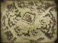
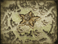

Requires
- Buildings: 
- Arts:
Enables
- Buildings: 
Spawned Garrisons
- Units:

Basic Building Statistics (can be modified by difficulty level, arts, skills, traits and retainers)
- Cost: 10000
- Unlocks an additional construction slot
- +6% bonus to the tax rate in this province
- -3 to happiness from modernisation
Clan Effects
- +5 to modernisation (clan development)
Description
An easy place to become lost among the crowds.
Some cities burst beyond the confines of their walls because they are such desirable places to live. The streets may not be paved with gold, but for the people who live and work in a municipality there are opportunities to better themselves and their status in society. A municipality significantly improves the tax income of a province.